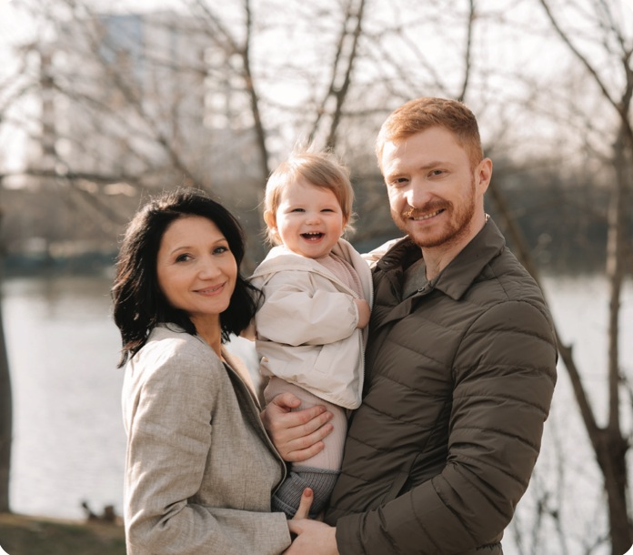
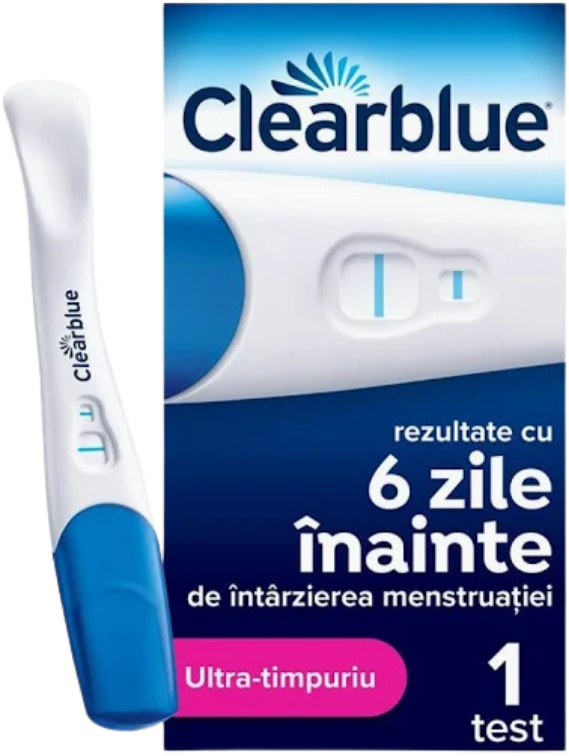
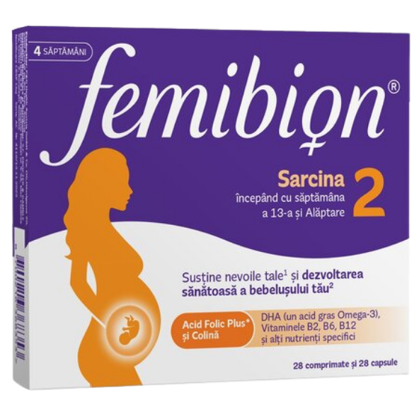
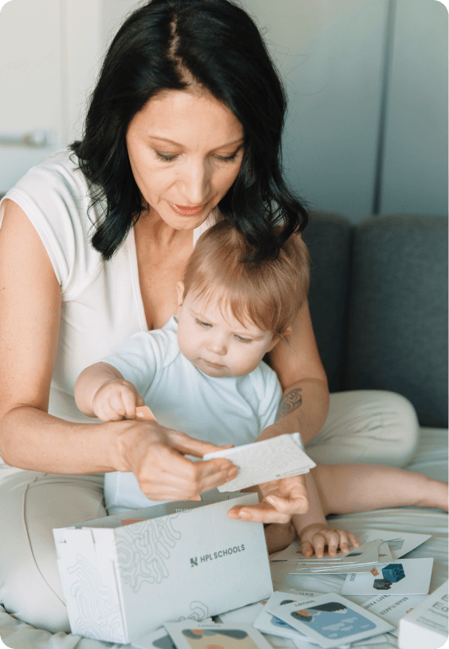

01 / LA RAFT
Mai mult decât un test de sarcină. Un fel de a fi alături.
O lună GOO PLUS, în valoare de 34,99 lei, poate face oferta Clearblue mai atractivă. Beneficiul trebuie văzut înainte de cumpărare.
Un beneficiu vizibil înainte de cumpărare ↗Clearblue, Femibion și Pampers pot fi alături de familie în momente diferite. GOO BEBE le poate conecta printr-o experiență locală, din sarcină până la 3 ani.

Un test răspunde unei întrebări. Pentru unele persoane, rezultatul poate aduce alte întrebări despre ce urmează.
Propunem ca produsele Clearblue participante să ofere o lună de GOO PLUS. Persoana alege dacă activează beneficiul și dacă dorește să exploreze resursele.
Testul oferă un răspuns.
Persoana poate activa beneficiul.
Resurse relevante pentru etapa ei.
O propunere comercială și educațională, construită în jurul momentelor relevante pentru familie.
O lună GOO PLUS, în valoare de 34,99 lei, poate face oferta Clearblue mai atractivă. Beneficiul trebuie văzut înainte de cumpărare.
Un beneficiu vizibil înainte de cumpărare ↗Persoana care dorește poate accesa informații și instrumente relevante după test, în ritmul propriu.
O experiență dincolo de produs ↗GOO BEBE poate completa experiența Clearblue cu resurse în română și conținut realizat sau verificat cu experți locali.
Relevanță pentru contextul din România ↗Clearblue poate conecta persoanele interesate de sprijin după test cu GOO BEBE chiar în momentul în care apare nevoia. Cele care aleg să continue pot descoperi conținut și oferte relevante pentru etapa lor, inclusiv de la Femibion și Pampers.
Un punct de intrare relevant. O relație care poate continua. ↗Împreună, putem oferi acces gratuit la resurse și workshopuri cu experți pentru familiile care au nevoie de ele. P&G își poate lega prezența de o contribuție concretă, cu beneficiari și obiective stabilite împreună.
Educație accesibilă. Impact care poate fi măsurat. ↗GOO BEBE poate transforma obiectivele brandurilor în experiențe concrete: conținut cu experți, workshopuri, oferte și campanii locale. Abonamentele și parteneriatele comerciale pot contribui la susținerea acestor activări.
Resurse și idei comune, într-o platformă existentă. ↗
O lună GOO PLUS oferită împreună cu produsele participante.
Un mesaj aprobat la raft sau online face beneficiul vizibil când persoana compară opțiunile.
Un flyer și un cod explică activarea și condițiile. Utilizarea beneficiului rămâne voluntară.
Șapte videoclipuri propuse despre utilizarea testului și informațiile din prospect, validate de Clearblue.

O lună GOO PLUS propusă pentru clienții Pampers.
Campaniile și canalele agreate prezintă beneficiul familiilor care folosesc Pampers.
Un landing page dedicat explică oferta, eligibilitatea și pașii pentru activarea voluntară.
Propunem 10–15 videoclipuri despre rutinele de îngrijire, cu integrarea produselor Pampers și aprobările stabilite împreună.

Conținut relevant și sprijin educațional pentru fiecare etapă.
Femibion poate fi prezent în aplicație și în campaniile comune, alături de resurse adaptate perioadei sarcinii.
Modalitatea de acces la beneficiul GOO PLUS și eligibilitatea se stabilesc împreună, prin canalele agreate.
Propunem integrarea produselor Femibion în 10–15 videoclipuri, cu responsabilități editoriale și aprobări clare.
GOO BEBE organizează resurse locale pentru sarcină, mamă și copil, până la vârsta de 3 ani.
Ghidare pe etape și instrumente pentru organizarea informațiilor.
Resurse pentru starea mamei și dezvoltarea copilului.
Materiale educaționale și lecții video adaptate contextului românesc.
Funcții și materiale suplimentare; conținutul exact se confirmă pentru ofertă.

GOO BEBE oferă informații și instrumente; nu confirmă medical sarcina și nu înlocuiește medicul.
Un test și posibilitatea de a descoperi sprijin suplimentar.
Conținut și activări relevante pentru perioada sarcinii, cu informații validate și transparente.
Resurse și experiențe pentru părinți și copii, până la 3 ani.

Pampers Club oferă deja recompense în România. GOO BEBE poate adăuga conținut local, workshopuri sau beneficii, dacă acestea sunt relevante pentru ambele echipe.
Despre Pampers Club ↗Traseul este o oportunitate, nu o promisiune: nu fiecare test este pozitiv, nu fiecare persoană își dorește o sarcină, iar participarea este voluntară.
O persoană poate folosi testul fără să activeze aplicația sau să comunice rezultatul.
Conținutul sponsorizat este marcat, iar alegerile privind comunicările sunt clare.
Raportarea agregată este punctul de pornire. Orice schimb de date personale necesită analiză separată.
Stabilim împreună produsele, canalele, conținutul și modul în care evaluăm valoarea pentru oameni și pentru parteneri.
Să începem conversația ↗